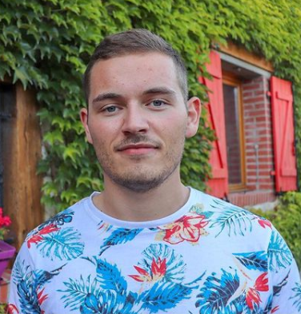

Corentin Jacinto
Actuellement en formation Web Developpeur
Mes Experiences
De 2013 à 2014
: manutentionnaire de rayon chez E.Leclerc à Millau (12)
De 2015 à 2016
: Volontaire en service civique à l'AFEV (Association de la Fondation Etudiante pour la Ville) à Rodez (12)
De 2016 à 2017
: Assistant de direction à la boulangerie Marie-Blachère de Millau (12)
De 2018 à 2020
: Responsable regional puis gérant d'agence chez Or en Cash à Pessac (33)
Soft Skills
Créativité
Curiosité
Esprit d'équipe
Autonome
Sens du relationnel
Empathie
Ouverture d'esprit
Cursur Scolaire
De 2009 à 2012
: Bac professionnel Relation clientèle à Millau (12)
De 2012 à 2013
: Licence Science du langage, option communication de crise à Montpellier (34)
De 2014 à 2015
: DUT Information Communication, option communication des organisations à Rodez (12)
De 2017 à 2018
: Titre RNCP Assistant de gestion option PME/PMI à Millau (12)
Hard Skills
HTML5 et CSS
VSCODE Studio
Photoshop
Word, Excel, PowerPoint
Management
Négociation
Technique de vente
Gestion d'un point de vente